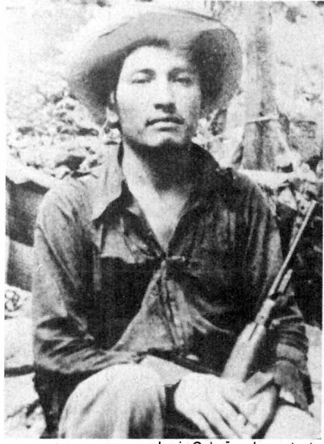
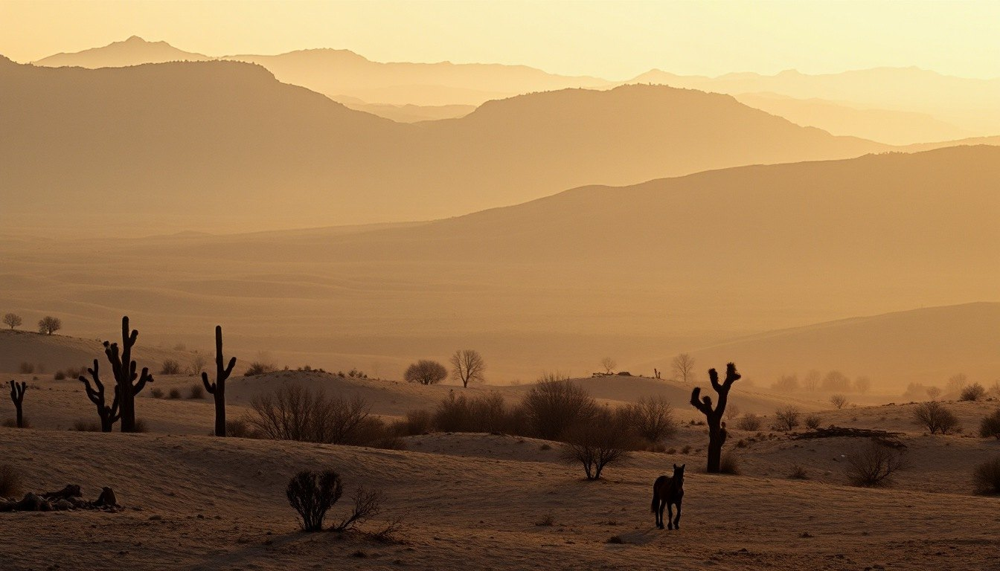
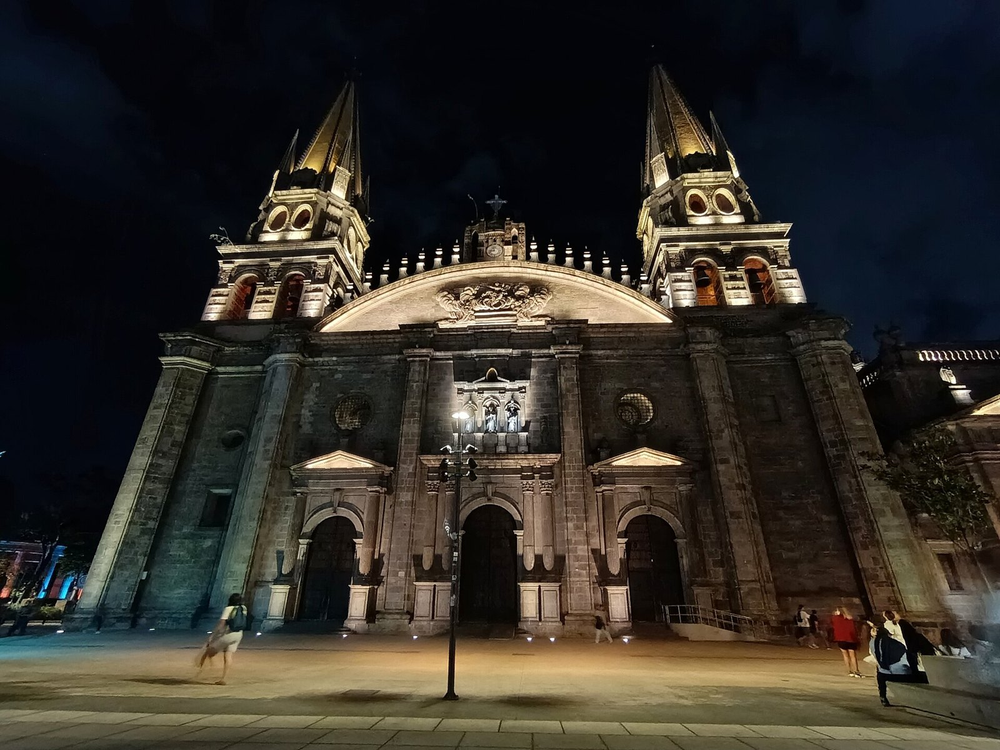

OKpolítico
OKpolíticoOKpolítico explica
Crisis en el INE: piden renuncia a Guadalupe Taddei
En este video de OKpolítico explica, desglosamos la confrontación surgida en el Consejo General del Instituto Nacional Electoral (INE). Representantes del PRI y de Somos MX exigier
24 de octubre de 2026
Lucio Cabañas: 50 años entre la guerrilla y la Guerra Sucia
A 50 años de la muerte del profesor normalista y líder guerrillero Lucio Cabañas Barrientos en la sierra de Tecpán, OKpolítico explica las causas de su levantamiento armado y las c
23 de octubre de 2026
Maximiliano I de México: el archiduque liberal y el Segundo Imperio
En este video de OKpolítico explica analizamos la trayectoria de Maximiliano I de Habsburgo y el desarrollo del Segundo Imperio Mexicano (1864-1867).
19 de octubre de 2026
El caso Posadas Ocampo: fuego cruzado o crimen premeditado
El 24 de mayo de 1993, el cardenal Juan Jesús Posadas Ocampo fue acribillado junto a seis personas en el Aeropuerto Internacional de Guadalajara. Durante décadas, el caso ha estado
18 de octubre de 2026Álvaro Obregón: ascenso militar, presidencia y magnicidio
Álvaro Obregón fue una de las figuras determinantes de la Revolución mexicana y de la reconstrucción institucional del país. Como militar, derrotó a la División del Norte en las ba
17 de octubre de 2026El expediente Ruiz Massieu: un crimen sin autor intelectual sentenciado
En este episodio de OKpolítico explica, revisamos el expediente penal y político del asesinato de José Francisco Ruiz Massieu, perpetrado el 28 de septiembre de 1994 en la Ciudad d
11 de octubre de 2026El expediente Colosio: 30 años de dudas y contradicciones
Analizamos a fondo el expediente del asesinato de Luis Donaldo Colosio Murrieta, candidato presidencial del PRI, ocurrido el 23 de marzo de 1994 en Lomas Taurinas, Tijuana. A travé
9 de octubre de 2026